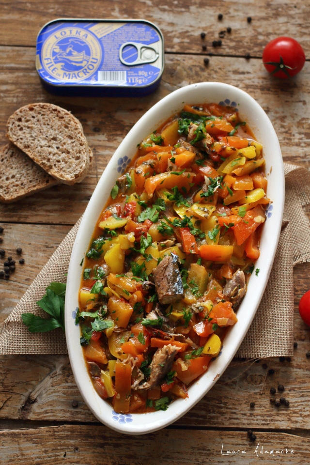

Mancare de ardei cu macrou

Daca nu v-ati gandit niciodata cat de gustoasa este combinatia dintre ardeiul gras si macrou,
va invit sa incercati aceasta mancare de ardei cu macrou. Se face atat de simplu,
in maxim 30 de minute este gata. O mamaliguta calda este de vis langa acest preparat.
Eu nu am avut malai de data aceasta, am uitat sa il trec pe lista de cumparaturi,
asa ca am prajit niste felii de paine rustica integrala cu care am gustat mancarica.
Curcubeu pe cerul gurii, cum se spune! Painica prajita, inmuiata in sosul usor dulce de ardei,
a fost delicioasa!
Haideti sa vedem cum se face aceasta reteta simpla cu ardei si file de macrou Lotka!
Mancare de ardei cu macrou – Ingrediente (2-4 persoane)
- 4 ardei grasi medii (400 g dupa curatare)
- 1 conserva macrou file Lotka, in ulei de floarea-soarelui (115 g)
- 1 lingura ulei de masline/floarea soarelui
- 1 catel de usturoi
- 1 ceapa mica alba
- 7-8 rosiii cherry
- 1 lingurita capere desarate
- sare dupa gust
- piper dupa gust
Mancare de ardei gras si peste – Preparare pas cu pas
- Curatam ardeii de seminte si filamentele albe, apoi ii taiem in fasiute potrivite.
- Tocam marunt ceapa si usturoiul, taiem in sferturi rosiile cherry.
- Punem uleiul intr-o tigaie antiaderenta, adaugam ceapa, usturoiul si caperele si le sotam cca 1 minut. Adaugam ardeii si amestecam.
- Sotam pe foc mic cca 6-7 minute sau pana cand ardeii se inmoaie, apoi adaugam macroul cu tot cu uleiul din conserva.
- Lasam mancarica de ardei cu macrou, inca cca 10 minute pe foc mic, condimentam cu sare si piper dupa gust, apoi stingem focul si o servim cu pofta.
- Daca va place, puteti adauga si putin patrunjel tocat in fiecare farfurie. Ii da un gust minunat!
- Este o mancare simpla, rapida, cu mamaliguta sau cu felii de paine prajita este nemaipomenit de gustoasa!